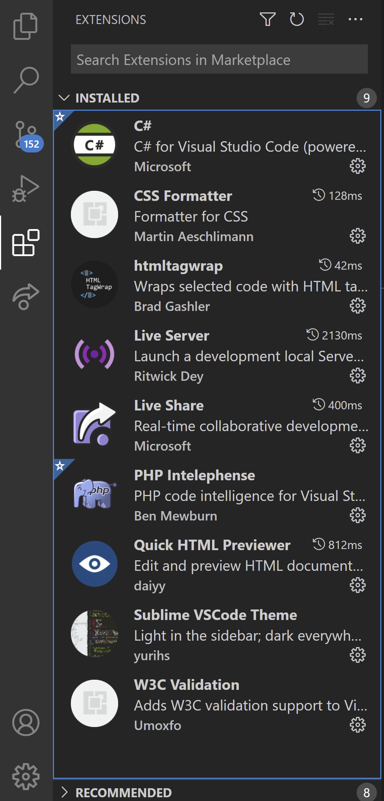

CURSUS INTRO
gebruik pijltjestoetsen om te navigerenCURSUS INTRO
Over deze cursus
Gebruikte symbolen
-
De cursus is grotendeels gemeenschappelijk voor de studenten graduaat en de studenten professionele
bachelor. Waar er verschillen zijn, wordt dit aangeduid met volgende symbolen:
- [GR]: enkel voor studenten graduaat
- [PB]: enkel voor studenten professionele bachelor
- [O]: optioneel, sterk aanbevolen voor wie wil doorgroeien in web
Doelstellingen
-
In deze cursus leer je statische HTML/CSS websites bouwen met een zo correct mogelijke
code:
- gevalideerd en zonder fouten
- met een correcte layout
- snel en geoptimaliseerd voor zoekmachines
- met gebruik van de juiste HTML elementen op de juiste plaats
- mobiel-vriendelijk en responsive
- toegankelijk over alle browsers en devices
- gebruiksvriendelijk, ook voor gebruikers met een beperking (auditief, visueel…)
-
Daarnaast hebben we ook aandacht voor het ontwikkelingsproces:
- de strategische doelstellingen van de website bepalen
- ideeën communiceren met handgemaakte schetsen
- de structuur uitwerken in de vorm van mockups in een tekenprogramma
- een geschikt en (gratis) CSS design kiezen
- de gecodeerde website online plaatsen op een hosting
Inhoud
-
Inhoudelijk heeft de cursus uit vier ongeveer gelijkwaardige delen:
- HTML: structuur van de pagina met HTML-tags
- CSS design: kleuren, lettertypes, icon fonts, achtergronden, hover effecten…
- CSS layout: kolommen, tekstomloop rond afbeeldingen, grids…
- CSS responsive: herschikken content naargelang breedte van het device
-
Daarnaast komen ook volgende onderwerpen aan bod:
- ontwerpen, bouwen en online publiceren van een website
- font embedding, b.v. icon fonts, Google fonts…
- embedden van fragmenten uit YouTube, SoundCloud, Google Maps, Codepen…
- toevoegen eenvoudige Javascript plugins als slideshow, foto carousel, lightbox, toolips…
- gebruik van CSS frameworks als Bootstrap (enkel voor graduaten)
Materiaal
-
Het materiaal voor dit vak vind je op volgende plaatsen:
- Toledo: mededelingen, algemene informatie, opgaves (project en lessen), nuttige links, een paar howto's
- HTML cursus: online HTML cursus, ben je nu aan het bekijken
- CSS cursus: online CSS cursus
- YouTube channel: Youtube kanaal met video's van de theorie en een praktijkdemo (volledig uitgewerkte website)
- hoewel beiden inhoudelijk volledig overlappen, is de HTML & CSS cursus vooral gericht op de portfolio oefeningen, terwijl de Youtube video's vooral de logica en volgorde van het project volgen
-
Wees voorzichtig met allerhande online tutorials, forums en blogs over HTML en CSS! Veel hebben:
- verouderde informatie en gedateerde methodes (pakweg > 2 jaar)
- onefficiënte algoritmes en oplossingen
- een belabberde codekwaliteit
- ronduit fouten
- beperk je strikt tot het cursusmateriaal plus een whitelist van betrouwbare online bronnen (zie volgende slide); bij twijfel, contacteer je docent

Online bronnen
-
HTML & CSS tutorials:
- https://www.sololearn.com/ — prima HTML and CSS tutorial
- https://www.w3schools.com — handig als referentie; de grotere codevoorbeelden echter zijn vaak fout, dus vermijd die
- https://developer.mozilla.org/en-US/docs/Learn
- https://css-tricks.com
- Browser compatibiliteit:
-
Help forums:
- https://stackoverflow.com — blijf kritisch; niet alle antwoorden zijn van dezelfde kwaliteit en soms vergezocht
-
Cheat sheets repository:
- https://www.cheatography.com/ — persoonlijk heb ik een voorkeur voor deze CSS sheet
- nog een goede bron gevonden? laat het ons weten, en we voegen het toe
Lessen & evaluatie
-
In totaal zijn er 14 lessen van 4u, als volgt verdeeld:
- 1 les ontwikkelomgeving (Chrome devtools, VS Code, Github)
- 4 lessen HTML (inhoud)
- 6 lessen CSS (opmaak)
- 1 les Javascript plugins
- 2 lessen op het einde vrijgehouden voor de afwerking van je project
- het graduaat heeft twee lessen per week, en dus maar 7 weken les i.p.v. 14
-
Elke les werken we aan twee parallelle opdrachten:
- portfolio (50%): wekelijkse oefeningen die je individueel bijhoudt op Github
- project (50%): eenvoudige website die je individueel uitwerkt op basis van een zelf gekozen onderwerp
- om te slagen voor het vak, moet je minstens 10/20 voor het project halen
- bij minder dan 50% aanwezigheid zonder reden, wordt je portfolio geweigerd
Les per les planning
(klik om te vergroten)
{kind=link}
Huisregels
-
Je kan niet studeren zonder een serene en productieve omgeving. Wat niet mag:
- te laat komen of te vroeg vertrekken zonder toelating
- luid praten of grappen maken
- je laptop ondertussen gebruiken voor iets anders dan deze cursus
- sociale media gebruiken, inclusief Facebook, Youtube, Snapchat, Tinder...
- je smartphone te frequent gebruiken (en a.u.b.: zet het op stil)
- rondwandelen in het lokaal (als je de benen wil strekken, neem een korte break buiten)
- eten in het lokaal (als je een energiedip hebt, eet een snack buiten)
- code van elkaar kopiëren of naar elkaar verzenden, zelfs al is het maar één regel!
-
Wat zeker wel mag:
- oplossingsstrategieën bespreken met je medestudenten
- met elkaar overleggen via samenwerkingstools als Slack, Discord, Teams...
- naar muziek luisteren op je koptelefoon
- je hand opsteken om hulp te vragen
- iets drinken, zolang het in een afsluitbare container is (geen blikjes dus!)
SYNTAX
Benodigdheden
Wat je nodig hebt
-
Voor HTML/CSS heb je niet veel nodig, en het is bovendien allemaal gratis:
- een degelijke teksteditor met uitgebreide mogelijkheden
- een goede browser met ingebouwde development tools
- een versioning tool om je werk online te bewaren, i.e. Github
- [optioneel] een paar tekst editor extensies
- [optioneel] een paar browser extensies
- [optioneel] een paar gangbare andere browsers (Edge, Safari, Firefox) om te testen op compatibiliteit
- [optioneel] een web server


Teksteditor — VS Code
-
In theorie voldoet elke degelijke teksteditor will do. Kijk uit naar deze eigenschappen:
- visueel aantrekkelijk en strakke GUI
- bestanden & mappen: navigatiebar, projecten, meerdere bestanden in tabbladen
- editeren: code folding, syntax highlighting, autocompletion en -indentatie, on-the-fly syntax check, shortcuts, refactoring, auto layout...
- zoeken/vervangen: basic search, searching in folders, reguliere expressies
- integraties: Git
- aanpasbaarheid: kleurschema's, voorkeuren
- uitbreidbaarheid: mogelijkheid extensies te downloaden en installeren
- veruit de beste keuze voor webontwikkeling en verplicht in deze cursus: Visual Studio Code
VS Code — shortcuts
-
Een absolute minimumlijst van VS Code shortcuts die je zou moeten kennen:
BASIC EDITING SELECTING CODING Ctrl-C copy Shift-RIGHT select character Ctrl-/ (un)comment Ctrl-X cut Shift-Ctrl-RIGHT select word Ctrl-[, Ctrl-] (un)indent Ctrl-V paste Shift-END select till end TAB, Shift-TAB add/remove tabs Ctrl-Z undo Shift-DOWN select line Ctrl-SPACE trigger suggestion Ctrl-Y redo Ctrl-L select current line Shift-Alt-F format document FILES/FOLDERS Ctrl-A select all SEARCHING Ctrl-O open Shift-Alt-RIGHT select block Ctrl-F find text Ctrl-S save NAVIGATION Ctrl-H find/replace Shift-Ctrl-S save as HOME begin of line Shift-Ctrl-F find in files Alt-TAB switch window END end of line Ctrl-P find file Ctrl-TAB switch tab Ctrl-RIGHT next word EDITOR reopen last tab Shift-Ctrl-T Ctrl-HOME begin of file Ctrl-B show/hide sidebar Ctrl-W close tab Ctrl-END end of file - zie de volledige cheatsheet: Windows and OSX
VS Code — extensies

-
VS Code uitbreiden met extensies is zeer eenvoudig. Enkele absolute aanraders:
- CSS Formatter: formatteer ook CSS code met Shift-Alt-F
- htmltagwrap: selecteer in HTML een tekst, en voeg er een tag rond met Alt-W
- Live Share: deel je code snel met iemand online (bijvoorbeeld je docent!)
- Quick HTML previewer: codeer links, en bekijk je pagina rechts via een splitscreen
- W3C validation: laat je HTML code live valideren
-
Daarnaast is standaard ook de zogenaamde Emmet plugin geïnstalleerd. Daarmee krijg je een heel aantal shortcuts ter beschikking. Enkele voorbeelden:
- html:5 + TAB: genereert een HTML basisdocument
- a + TAB: genereert
<a href=""> - style + TAB: genereert
<style></style> - ul>li*3 + TAB: genereert
<ul><li></li><li></li><li></li></ul> - volledige cheat sheet zie https://docs.emmet.io/cheat-sheet/
Browser — Chrome
- Je ontwikkelt best op de beste browser op de markt; vandaag is dit Chrome. Pas als alles daar werkt, test/fix je je site voor de andere browsers (vooral Safari is een lastpak).
- Chrome heeft uitstekende, misschien wel de beste ingebouwde development tools:

Chrome — Developer tools
-
Open de inspector met Shift-Ctrl-I or F12. Je vindt er volgende tabbladen:
- Elements: inspecteer HTML & CSS
- Console: waarschuwingen en fouten worden hier getoond
- Sources [PB]: vind alle bronnen van de geladen pagina (fonts, afbeeldingen, scripts...)
- Network [PB]: list of all network activity during page load
- Performance [PB]: record load times, CPU & memory load...
- Memory [PB]: view memory stack
- Application: manage cookies, sessions, storage...
- Security [PB]: security info about connection, certificate...
- Audit [PB]: audit & benchmark your page, get technical tips
- in de eerste les kijken we in detail naar deze functies
Chrome — extensies
-
Een paar te overwegen Chrome extensies:
- een goede uitbreiding van Chrome's development tools: web developer toolbar
- geïntegreerde HTML validatie met HTML validator
- color picker door colorzilla
- als je snel een eenvoudige web server nodig hebt: 200 ok


Chrome — Web server
- Normaal heb je geen web server nodig in deze cursus, behalve voor sommige Chrome extensies, die uit veiligheidsoverwegingen geen toegang krijgen tot lokale bestanden.
- Je kan een full-blown developer stack als XAMPP of WAMP installeren (je hebt dit in het tweede jaar sowieso nodig); voor alle toepassingen in deze cursus echter volstaat de eenvoudige 200 ok chrome extensie.

Github versiebeheer
- Versiebeheer: hou alle bestandswijzigingen bij in een historische tijdslijn, met de mogelijkheid terug te keren naar vorige versies
-
Github is met voorsprong het meest polulaire versiebeheerssysteem. Terminologie:
- project waarvan de bestanden beheerd worden: repository
- een lokale kopie maken van een online project: clone
- een nieuwe repository maken op basis van een bestaande repository: fork
- een variatie maken van een repository om te experimenteren: branch
- een bug fix of verbetering voorstellen: pull request
- twee verschillende branches samenvoegen: merge
- wijzigingen doorvoeren in de repository: commit
- lokale wijzigingen uploaden naar de online (remote) repository: push
- Github kan je gebruiken alleen of in team, online en/of lokaal.
SYNTAX
Code kwaliteit
Browsers zijn vergevingsgezind
- De browser is zeer vergevingsgezind voor codefouten (in tegenstelling tot bv. Java of C#
programma's). Deze pagina bijvoorbeeld wordt (bijna) correct weergegeven, maar bevat toch een
aantal fouten. Kan je ze vinden? Valideer de code op https://validator.w3.org/!
<html> <head> <meta charset="UTF-8"> <title>validation demo</title> </head> <body> <p> Look at ur week menu, lotz of goodfoods 😛👍🍕🌮🍔 <ul> <li>deep fried hash brown covered egg bombs</li> <li>crumpets crouton salad</li> <li>cheese stuffed tater tot</li> pizza burger mozarella sticks</li> </ul> </p> <img src="img/pizza-burger-mozzarella-stick.webp> </html>
Belang van code kwaliteit
Als de browser niet moeilijk doet, waarom is code kwaliteit dan belangrijk?
Reden 1: toegankelijkheid
-
Een goed gecodeerde site is breed bruikbaar:
- door alle gebruikers, ook met een beperking (blinden, motorische beperking...)
- op alle browsers (Chrome, FireFox, Safari...)
- op alle toestellen (PC, smartphone, tablet...)
- → toegankelijke code = meer klanten = meer geld!

Reden 2: zoekmachine ranking
-
Code die technisch niet volgens de regels van de kunst opgebouwd is:
- is groter, wat langere laadtijden betekent
- is trager, waardoor je site minder snel is
- is minder responsive voor mobiele toestellen
- is door fouten in de HTML structureel minder duidelijk
- is daardoor inhoudelijk moeilijker indexeerbaar voor zoekmachines
- is daardoor ook minder goed bruikbaar voor blinden
- ...
- → al deze factoren beïnvloeden je page ranking negatief
- → technisch correcte code = hogere page ranking = meer geld!
Reden 3: jijzelf en je team
-
Slechte code:
- is lastig te onderhouden
(bv. een klant die na jaren een update wil) - is een slechte referentie bij latere sollicitaties
(bv. voor een job of stage) - wekt irritatie op bij je teamleden en omgekeerd
- is lelijk en beschamend om later naar te kijken
- ...
- is lastig te onderhouden
- → efficiënte code = sneller werken = meer geld!